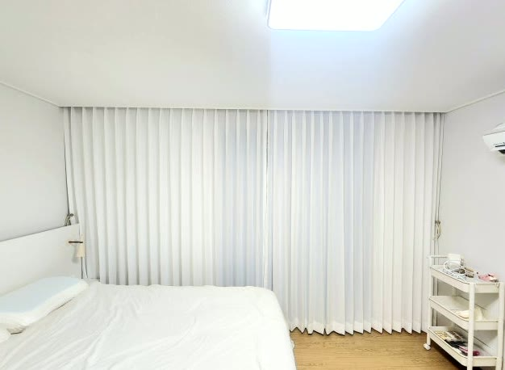
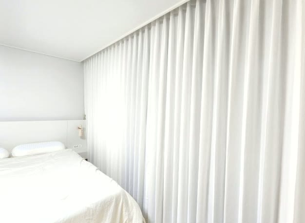
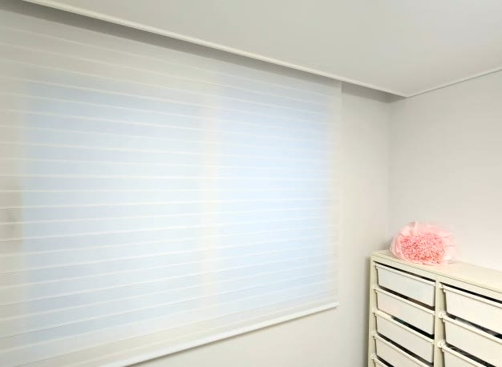
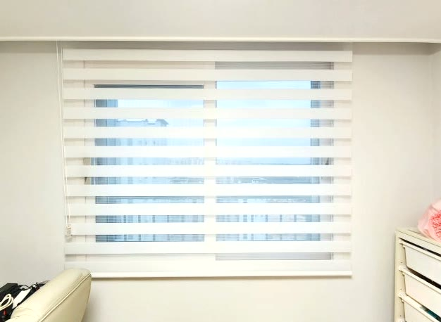
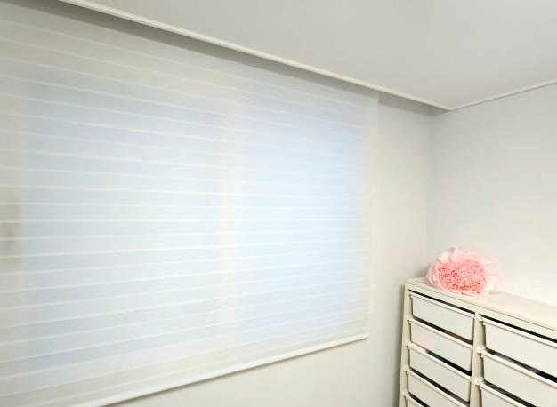

2026년 6월 24일 시공
포항 장성동 아파트 입주
헤비쉬폰·콤비블라인드 시공후기

포항 장성동 아파트에 다녀왔습니다.
새로 입주하는 집이라, 거실부터 침실, 작은방까지 커튼과 블라인드를 한 번에 세팅하는 현장이었습니다.
화이트 톤으로 꾸민 집이라, 창가도 그 톤에 맞춰 통일감 있게 정리하고 싶다는 요청이었습니다.
공간마다 제품을 따로 고르다 보면 색과 분위기가 제각각이 되기 쉬운데, 처음부터 한 톤으로 맞추기로 했습니다.
입주 첫 세팅은 통일감이 중요합니다
입주를 앞둔 집은 첫 세팅이 오래갑니다.
이때 창가 색을 공간마다 다르게 고르면, 집 전체가 산만해 보이기 쉽습니다.
반대로 톤을 하나로 맞춰두면, 제품 종류가 달라도 집 전체가 정돈돼 보입니다.
그래서 이번에는 거실·침실·작은방을 모두 화이트 계열로 통일했습니다.

거실과 침실은 나비주름 헤비쉬폰으로
거실과 침실에는 나비주름 헤비쉬폰을 달았습니다.
헤비쉬폰은 일반 쉬폰보다 도톰하고 밀도가 높아, 낮에 빛은 부드럽게 들이면서 바깥 시선은 가려 줍니다.
나비주름으로 잡으면 주름이 일정하고 풍성하게 떨어져, 창 전체가 한결 고급스럽고 볼륨감 있게 마감됩니다.
화이트 헤비쉬폰은 빛을 머금어 공간을 환하고 넓어 보이게 하고, 화이트 톤 인테리어와 부딪히지 않고 자연스럽게 어우러집니다.

거실은 가족이 가장 오래 머무는 공간이라, 채광과 분위기를 함께 살리는 데 신경 썼습니다.

작은방은 콤비블라인드로
작은방에는 콤비블라인드를 시공했습니다.
콤비블라인드는 비치는 원단과 불투명 원단이 번갈아 겹쳐진 구조로, 원단을 조금씩 움직여 빛과 시선을 단계별로 조절할 수 있습니다.
활짝 열면 환하게, 겹치면 은은하게, 더 내리면 시선을 확실히 가리는 식으로 작은 공간에서 채광을 세밀하게 다루기 좋습니다.

색은 거실·침실 헤비쉬폰과 같은 화이트로 맞춰, 제품 종류는 달라도 집 전체가 하나의 톤으로 떨어지도록 통일했습니다.

창마다 따로 실측했습니다
입주 세팅은 창마다 크기와 용도가 달라, 각 창을 따로 실측하는 게 중요합니다.
거실·침실 헤비쉬폰은 나비주름 폭을 넉넉히 잡아 풍성하게 떨어지도록 하고, 바닥선에 맞춰 길이를 정리했습니다.
작은방 콤비블라인드는 창 크기에 맞춰 단정하게 고정해, 여닫기와 조절이 편하도록 했습니다.
관리도 어렵지 않습니다
헤비쉬폰은 평소 먼지를 가볍게 털어 주시고, 오염이 있을 때 부분 세탁하시면 됩니다.
콤비블라인드는 마른 천이나 먼지떨이로 원단 결을 따라 살살 닦아 주시면 오래 깨끗하게 쓰실 수 있습니다.
거실·침실은 헤비쉬폰으로 볼륨감과 은은한 채광을, 작은방은 콤비블라인드로 세밀한 채광 조절을 잡고, 전 공간을 화이트로 통일해 깔끔하게 마감해 드렸습니다.
입주 커튼·블라인드를 준비 중이시면, 창 사진만 보내주셔도 방문 전에 대략적인 견적부터 알려드립니다.
포항을 포함한 대구·경북 전 지역 아파트·가정집·상가 실측 상담 도와드리고 있습니다.